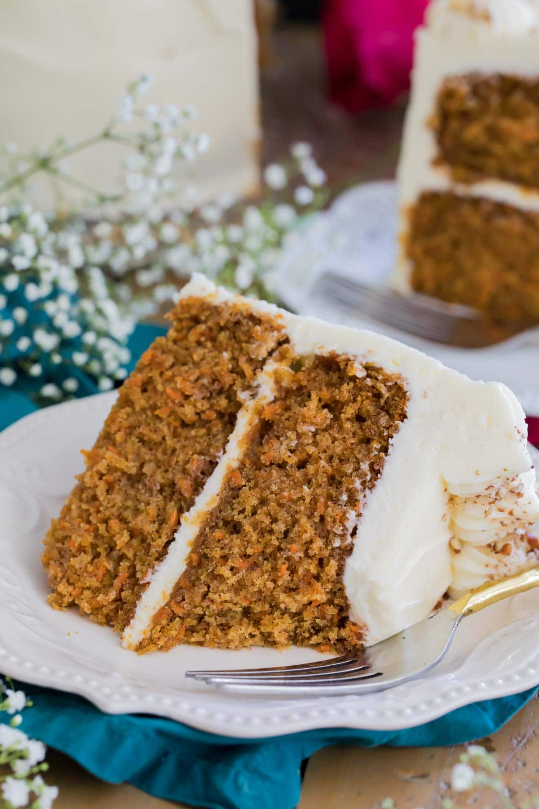

Carrot Cake

Ingredients
- 2 1⁄2 cups flour
- 1 cup sugar
- 1 cup light or dark sugar tightly packed (I prefer dark)
- 1 1⁄2 tsp baking soda
- 1 tsp baking powder
- 1 tsp salt
- 2 tsps ground cinnamon
- 1⁄2 tsp nutmeg
- 1 cup canola or vegetable oil
- 1⁄2 cup unsalted butter, melted
- 4 large eggs, room temperature
- 1 TBS vanilla extract
- 3 cups grated carrots
- 1 cup chopped walnuts or pecans, optional
Cream Cheese Frosting
- 1⁄2 cup unsalted butter, softened
- 8 oz cream cheese, softened
- 1 tsp vanilla extract
- 1⁄4 tsp salt
- 4 cups powdered sugar
For Cake: Preaheat oven to 350°F and prepare two 8-inch pans by lining the bottoms with parchment paper and lightly greasing and flouring the sides.
In a large bowl, whisk together your flours, sugars, baking powder, baking soda, salt, cinnamon, and nutmeg.
Add your canola oil and melted butter and stir well (batter will be pretty stiff and thick at this point, I usually use an electric mixer or my stand mixer to combine everything nicely).
Add eggs, one at a time, stirring well after each addition.
Stir in vanilla extract.
Stir in carrots and nuts (if using) until ingredients are well-combined.
Evenly divide carrot cake batter into prepared baking pans and bake at 350°F for 40 minutes (toothpick inserted in center should come out mostly clean with only a few moist crumbs).
Allow carrot cake to cool in the pans for 10 minutes, then run a knife around the edge and invert onto cooling rack to cool completely.
Allow cake to cool completely before covering with cream cheese frosting.
For Cream Cheese Frosting: Combine butter and cream cheese in a large bowl and use an electric mixter to beat until creamy, well-combined, and lump free.
Add vanilla extract and sprinkle salt into the bowl and stir well to combine.
With mixer on low, gradually add powdered sugar until ingredients are completely combined (be sure to scrape the sides and bottom of the bowl with a spatula).
Once your cake has cooled completely, cover with frosting.
In a pan, melt the chocolate and butter and cool for 10 minutes.
In a separate bowl, mix 4 eggs with sugar. Whisk. Then add flour while continuing to whisk. Add the remaining 3 eggs and whisk. Then add the egg mixture to the chocolate mixture. Pour this entire mixture into individual ramekins.
Bake until just done, about 15-20 minutes (interior wil be melting, not set).